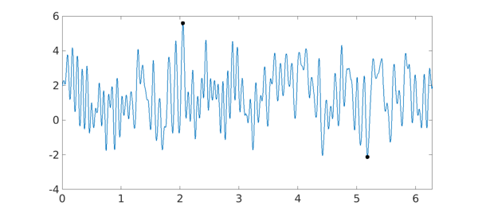

We illustrate how to find extrema of a function under a constraint that can be parametrized by a chebfun, chebfun2v or chebfun3v object. For this we use the composition of different Chebfun objects.
1. Extrema on curves
To demonstrate the idea, we begin with a very simple example where one can see the solution (and one certainly would not need to use Chebfun2 in practice!). Suppose we want to find the extrema of the function $g(x,y) = x^2 - y^2$ on the unit circle in the euclidean plane using Chebfun. The extrema of $g$ are known analytically: $g$ attains its maximum $1$ at the points $(\pm 1, 0)$, and its minimum $-1$ at $(0, \pm 1)$. To find these values in Chebfun, we parametrize the constraint:
f = chebfun(@(t) [cos(t), sin(t)], [0, 2*pi]);
and search for the extrema of $h = g(f)$. The advantage is that we are now computing the extrema of a function of one variable, without constraint. $h$ is again a chebfun which we compute by
g = chebfun2(@(x,y) x.^2 - y.^2); h = g(f)
h =
chebfun column (1 smooth piece)
interval length endpoint values
[ 0, 6.3] 29 1 1
vertical scale = 1
Its extrema can be found with the command minandmax:
format long [Y, X] = minandmax(h, 'local')
Y =
1.000000000000000
-1.000000000000000
1.000000000000000
-1.000000000000000
1.000000000000000
X =
0
1.570796326794896
3.141592653589793
4.712388980384689
6.283185307179586
Here we use the the local flag to obtain all (local) extrema of $h$. The computed points X are points in the domain of definition of $h$. To obtain the points on the unit circle, where $g$ is defined, we map these with $f$:
X = f(X)
X = 1.000000000000000 0 0.000000000000001 1.000000000000000 -1.000000000000000 0.000000000000000 -0.000000000000001 -1.000000000000000 1.000000000000000 -0.000000000000000
Since X(1,:) = X(5,:), we have recovered the four points on the circle where $g$ attains its extrema.
Let us consider the more interesting example of finding the extrema of the function
g = cheb.gallery2('challenge');
from the SIAM 100-digit challenge on the unit circle. As before we compute the extrema of the chebfun $h = g(f)$:
h = g(f); [Y, Xh] = minandmax(h)
Y = -2.123351672827956 5.601493400930885 Xh = 5.178692247354336 2.047196233288410
The corresponding points on the unit circle are
X = f(Xh)
X = 0.449587308415000 -0.893236392066599 -0.458582925296232 0.888651619380031
and are marked as black dots on the contour plot of $g$:
contourf(g, 4) hold on plot(chebfun(@(t) exp(1i*t), [0, 2*pi]), 'k-', 'LineWidth', 2) plot(X(:,1), X(:,2), 'ko', 'MarkerFaceColor', 'k') text(X(1,1), X(1,2), ' min', 'color','w', 'FontWeight','bold', 'FontSize',42) text(X(2,1), X(2,2), ' max', 'color','w', 'FontWeight','bold', 'FontSize',42) hold off axis equal
The restriction of $g$ to the unit circle, $h = g(f)$, looks as follows:
plot(h) hold on plot(Xh, Y, 'ko', 'MarkerFaceColor', 'k') hold off

Similarly we can find the extrema of a function of three variables on a curve in 3d space: $g$ then will be a chebfun3 and $f$ a chebfun with three columns.
2. Extrema on surfaces
Suppose we want to compute the extrema of a function $g(x,y,z)$ of three variables on a 2d surface in 3d space. For surfaces that are parametrized by a function $[x;y;z] = f(u,v)$, we can compute the extrema of $g$ on that surface by considering the composition $h = g(f)$ and determining its extrema. The advantage is that we now compute the extrema of a function of two variables and get rid of the constraint.
Let us compute the extrema of
g = chebfun3(@(x,y,z) x + y + z, [-2, 2, -2, 2, -2, 2]);
on the 2d surface in 3d space parametrized by
f = chebfun2v(@(x,y) x, @(x,y) y, @(x,y) x.^3 + y.^2); surf(f)
To find the extrema, we compute
h = g(f); [Y, X] = minandmax2(h)
Y = -2.250000000000000 4.000000000000000 X = -1.000000000000000 -0.500000000000000 1.000000000000000 1.000000000000000
So $g$ attains its minimum and maximum at the points
Xmin = f(X(1,1), X(1,2)) Xmax = f(X(2,1), X(2,2))
Xmin =
-1.000000000000000
-0.500000000000000
-0.750000000000000
Xmax =
1
1
2
The values of $g$ at these points corresponds indeed to the values Y computed by minandmax2:
g(Xmin(1), Xmin(2), Xmin(3)) g(Xmax(1), Xmax(2), Xmax(3))
ans =
-2.250000000000000
ans =
4
3. Extrema on non-standard domains
So far we used the composition of chebfuns to compute extrema on a curve or surface which were lower-dimensional surfaces in the domain of definition of the function.
The same idea can be used to find the extrema of a chebfun2 on a non-standard region which can be parametrized by a chebfun2v, or of a chebfun3 on a non-standard region parametrized by a chebfun3v.
For example, consider the tilted square with corners $(1,0)$, $(0,1)$, $(-1,0)$, and $(0,-1)$, which can be parametrized by the function $f(x,y) = (x-y, x+y)$ defined on $[-1/2, 1/2] \times [-1/2, 1/2]$:
f = chebfun2v(@(x,y) x - y, @(x,y) x + y, [-1/2, 1/2, -1/2, 1/2]);
Here is a plot:
t = chebfun(@(t) t); bdry = join(t - 1i, 1 + 1i*t, 1i - t, -1 - 1i*t)/2; fbdry = f(bdry); plot(fbdry(:,1), fbdry(:,2)) axis equal
Now let us compute the extrema of the function $g(x,y) = x^3 + \cos(5x) - y^2$ on this tilted square. As before, we compute the extrema of $h = g(f)$:
g = chebfun2(@(x,y) x.^3 + cos(5*x) - y.^2); h = g(f); plot(h) [Y, X] = minandmax2(h)
Y = -1.391273244992604 1.283662185463225 X = -0.151400479011023 0.500000000000000 0.500000000000000 -0.500000000000000
So the minimum and maximum of $g$ on the tilted square are located at
Xmin = f(X(1,1), X(1,2)) Xmax = f(X(2,1), X(2,2))
Xmin =
-0.651400479011023
0.348599520988977
Xmax =
1
0
This method allows one to find extrema of chebfun2 objects on any set that is the image of a chebfun2v. Similarly, we can find the extrema of a chebfun3 on any set that is the image of a chebfun3v.